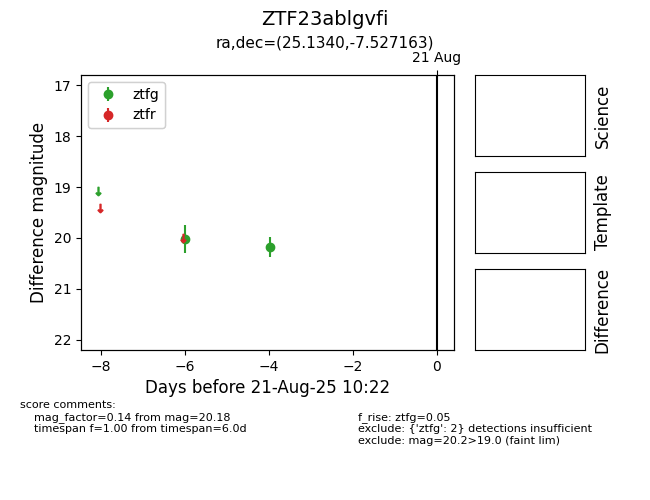

Target ZTF23ablgvfi at 2025-08-21 10:22, see:
FINK: fink-portal.org/ZTF23ablgvfi
Lasair: lasair-ztf.lsst.ac.uk/objects/ZTF23ablgvfi
ALeRCE: alerce.online/object/ZTF23ablgvfi
alt names
ZTF23ablgvfi (ztf,alerce)
coordinates:
equatorial (ra, dec) = (25.1340,-7.52716)
galactic (l, b) = (155.8846,-67.20271)
photometry
last ztfg=20.18
2 ztfg detections
